Luis Arturo González Salas
Robotics Engineer (M.Sc.)
Specializing in the design, construction, and programming of physical systems. Graduate of a double degree Master's program in Advanced Robotics across Japan and France. Demonstrated expertise in integrating hardware components, sensor networks, and advanced control algorithms to engineer robust solutions for complex technical challenges.
Actively seeking full-time robotics engineering roles in Europe. Fully authorized to work in France (Valid Residence Permit).
Technical Stack
Languages
About Me
Professional experience, double degree studies, and academic achievements.
Academic Projects
System architecture, robotic manipulation, automation lines, and computer vision.
My Code
Personal software repositories featuring clean algorithms and framework integration.
About Me: Education, Experience & Achievements
Education & Achievements
Academic Background
M.Sc. in Science & Engineering
Keio University (Tokyo, Japan) | 2024 - 2025
Part of the JEMARO Double Degree program. Specialized in micro-robotics, control systems, and haptic feedback.
M.Sc. in Advanced Robotics
Ecole Centrale de Nantes (France) | 2023 - 2024
First year of the JEMARO Double Degree. Comprehensive study of kinematics, dynamics, and medical robotics architecture.
B.Sc. in Mechatronics Engineering
Tecnológico de Monterrey (Mexico) | 2019 - 2023
Minor in Cyber-physical Systems. Integrated mechanics, electronics, and computing for automated solutions.
Honors & Awards
-
Erasmus Mundus Scholarship
Highly competitive grant awarded for master studies in the JEMARO program (2023).
-
Full Coverage Academic Scholarship
Awarded full tuition coverage for excellence prior to bachelor studies (2019).
-
Olympiad of Informatics Medals
Silver medal at the National Mexican Olympiad (2018) and Gold medal at the State level (2016-2018).
-
CSWA SolidWorks Certification
Certified associate in mechanical design (2021).
-
COVID-19 Public Hospital Donation
Engineered and produced 1,800 mask protectors for frontline medical staff (2020).
Professional Experience
Engineering Project Management Intern
Navistar International
2022 - 2023
- Engineered a comprehensive internal platform utilizing Visual Basic to systematically control, review, and summarize engineering projects across the organization.
- Collaborated in daily agile stand-ups and technical design reviews with cross-functional engineering teams based in the USA.
Full-Stack Web Developer
Freelance Contractor
2019 - 2021
- Developed and deployed comprehensive web applications for inventory and expense tracking, integrating secure user authentication and role-based access control.
- Engineered relational database architectures (MySQL) to log financial expenditures, track sales, and manage dynamic product information.
- Built interactive digital catalogs featuring real-time search engines to improve end-user navigation and product discoverability.
- Designed responsive administrative dashboards with data analytics capabilities to streamline organizational oversight.
Academic Projects
Portfolio of physical systems and simulations developed during Master's and Bachelor's degrees. Projects encompass mechanical design, electronics integration, and control software architecture.
Master's Degree
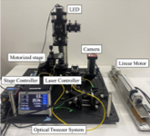
Micro-scale Particle Teleoperation
Design of a two-axis haptic teleoperation system allowing operators to physically feel and control laser-trapped microparticles. Features integrated trap stiffness calibration alongside admittance control and reaction force observers.
Technical Details
Medical Cobotic Assistant
Development of a simulation for the hand guidance of a macro-micro redundant robot. Engineered for medical applications to assist in percutaneous interventions utilizing advanced torque and impedance control laws.
Technical Details
3-RPR Parallel Robot Optimization
Design and mathematical optimization of a 3-RPR planar parallel robot, minimizing physical footprint while enforcing strict operational reach and singularity-free configuration constraints.
Technical Details
Manipulator Modeling & Control
Development of foundational control algorithms in C++ for robotic manipulators. Features implementation of direct/inverse kinematics, Jacobian modeling, and Cartesian trajectory generation.
Technical DetailsBachelor's Degree

Automated Production Line
Automation of a manufacturing plant utilizing mobile robots, collaborative arms, and digital twin technology to architect a self-regulating Industry 4.0 production system.
Technical Details
2-DoF Automated Gripper
Engineering of a 2-DoF linear gripper and rotational system for automated brick laying. Integrates precise AC motor control, structural CAD design, and real-time sensor feedback.
Technical Details
Robotic Welding Cell
Design and simulation of an automated robotic work cell for a laser welding production line. Integration of ABB industrial robots, custom pneumatic fixtures, and safety systems.
Technical Details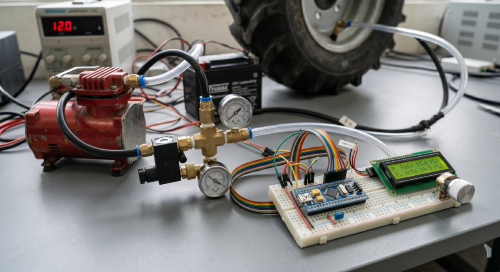
Automatic Tire Inflation System
Design and implementation of an RTOS-driven embedded system prototype for dynamic tractor tire pressure regulation, featuring PID control and active leakage compensation.
Technical DetailsMy Code
Independent software engineering projects developed to implement specific algorithms and integrate modern robotics frameworks.
Collaborative Arm: Fruit Sorting
ROS 2 • Gazebo Simulation • Computer Vision
A comprehensive ROS 2 and Gazebo simulation of a robotic arm environment. System utilizes stereo vision to detect/classify targets and an inverse kinematics solver for autonomous pick-and-place sorting. Includes a custom Tkinter UI for bridging manual overrides and automated logic.
Micro-scale Particle Manipulation Using Bilateral Control
Keio University, Tokyo
Technical Specifications
Core Concepts
Bilateral Teleoperation, Admittance Control, Reaction-Force Observer (RFOB), Optical Trap Calibration
Software Integration
C++, Python, OpenCV
Hardware Components
Thorlabs CDL1015 Laser, 100x Oil-Immersion Objective, Thorlabs Zelux CMOS Camera, Custom 2-Axis Linear Motors, Motorized Stage
Project Context
This project focuses on bridging the sensory gap in biological micromanipulation procedures, such as Intracytoplasmic Sperm Injection. Operators normally rely entirely on visual information to guess the forces applied to fragile cells. To solve this, a 2-axis bilateral teleoperation system was designed to pair a custom-built haptic master device with an optical tweezers slave manipulator. The system translates the macroscopic hand movements of the operator into precise microscopic actions, allowing the user to physically feel piconewton-scale interaction forces.
Development Architecture
The hardware utilizes a Thorlabs CDL1015 continuous wave laser at 976 nanometers focused through a 100x oil-immersion objective to create the optical trap. The master interface features two linear motors equipped with high-resolution encoders.
The software architecture relies on a C++ high-frequency control loop to manage an admittance control scheme. To provide force feedback without a dedicated physical sensor, the system incorporates a Reaction-Force Observer that estimates the interaction forces based on real-time tracking. A Disturbance Observer is also utilized to estimate and cancel out external mechanical disturbances on the linear motors, ensuring the operator only feels the true micro-environment forces.
For position tracking, a custom computer vision algorithm was implemented in Python using OpenCV. The software applies a Gaussian blur to reduce noise and uses thresholding to isolate the laser center. It then applies sub-pixel corner detection to accurately find the centroid of the trapped particle. This positional data is sent to the main controller via socket communication to calculate the exact forces.
Accurate force estimation requires calculating the optical trap stiffness. The project evaluated several passive calibration techniques. The Equipartition, Boltzmann, and Mean Squared Displacement methods proved reliable. The Power Spectral Density analysis overestimated the stiffness because the camera's limited sampling rate of 107.9 Hz introduced motion blur and aliasing.
Project Media Gallery
ICSI Application
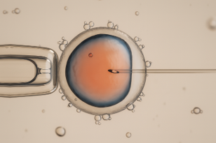
An illustration showing an Intracytoplasmic Sperm Injection procedure, demonstrating the traditional method versus the application of optical tweezers for non-contact immobilization.
Optical Tweezer Setup
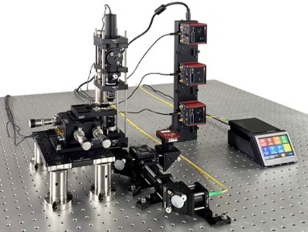
A photograph of the commercial optical tweezer breadboard kit used as the foundation for the slave manipulator.
System Diagram
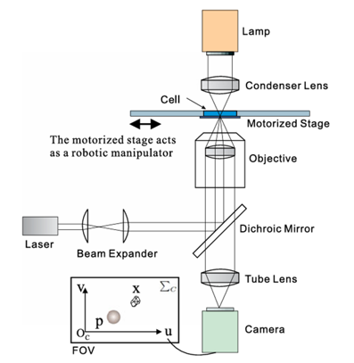
A block diagram outlining the robotic cell manipulation setup, detailing the laser path, motorized stage, and camera field of view.
Linear Spring Model
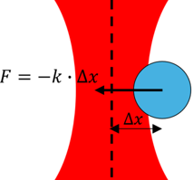
A conceptual diagram showing how the optical trap acts as a linear spring, applying a restoring force proportional to the displacement of the particle.
Vision Algorithm
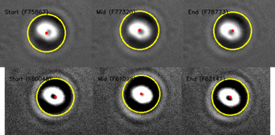
A visual demonstration of the OpenCV particle detection algorithm successfully tracking the centroid of a bead under different illumination settings.
Radial Force Profile
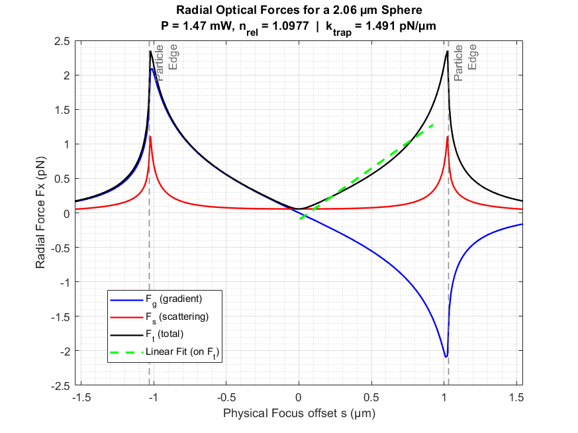
A graph displaying the predicted radial optical force profile for a 2.06 micrometer sphere, highlighting the gradient and scattering force components.
Axial Force Profile
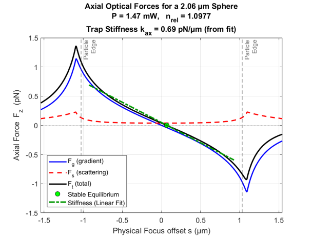
A graph showing the predicted axial optical force profile, indicating the stable equilibrium point of the optical trap.
Trap Calibration
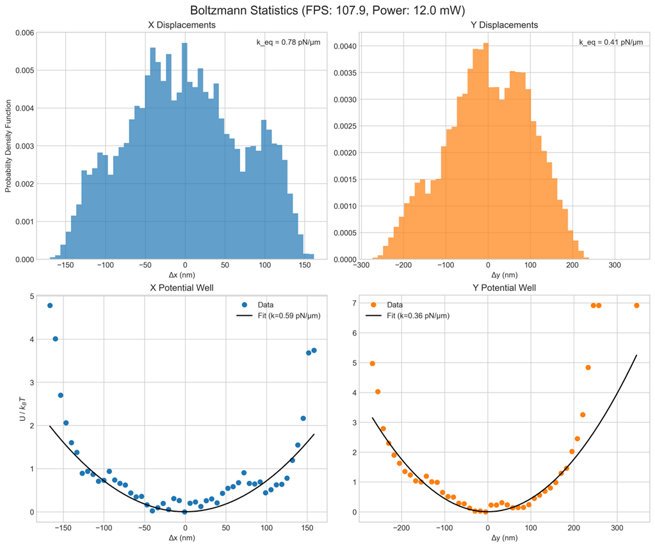
Charts showing the potential energy profile and harmonic fit used during the Boltzmann statistics calibration method to determine trap stiffness.
Position Tracking
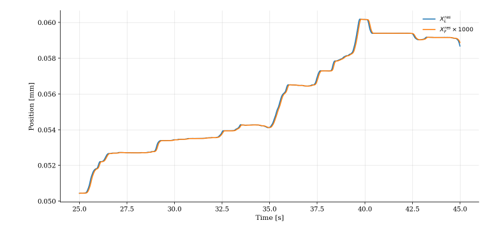
A plot demonstrating the position tracking performance, showing how closely the scaled follower device matches the leader position during teleoperation.
Force Feedback Validation
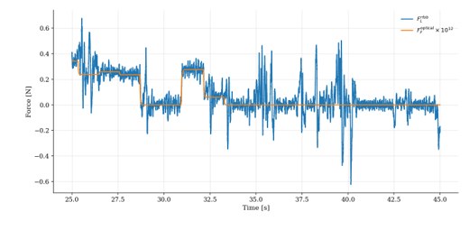
A graph comparing the reaction force observer estimate against the scaled optical force, validating the accuracy of the haptic feedback provided to the operator.
Medical Cobotic Assistant
École Centrale de Nantes
Technical Specifications
Core Concepts
Impedance Control, Kinematics, Jacobian, Task Distribution, Manipulability Index
Software Environment
MATLAB, Simulink
Hardware Models
KUKA iiwa 7 R800 (7-DoF), RRR Serial Robot (3-DoF)
System Objective
Simulation development for the hand guidance of a macro-micro redundant robotic system. The initiative aims to assist in percutaneous medical interventions, where enhanced medical gestures lead to improved patient care, reduced intervention costs, and optimized ergonomic conditions for surgeons.
The complete architecture was modeled using MATLAB and Simulink, pairing a heavy 7-DoF KUKA robot (acting as the macro system) with a smaller 3-DoF robotic mechanism (the micro system).
Control & Kinematics Strategy
Robot configurations were initially defined utilizing Denavit-Hartenberg parameters to compute forward kinematics and Jacobian matrices. The manipulability index—a critical safety metric indicating proximity to mechanical singularities—was continuously derived from these matrices to ensure secure operations.
A core operational requirement mandated position control with a fixed orientation for the macro arm, while the micro robot operated exclusively via torque control. A computed torque controller featuring an impedance control law was engineered for the surgical tool. This configuration allows the mechanism to function as a virtual spring and damper, yielding safely to applied surgical forces and rendering the heavy macro robot virtually weightless during manual hand guidance.
To unify both machines, a dynamic task distribution algorithm was implemented. By monitoring the micro-robot's physical extension (distance AB) and current manipulability index, the algorithm evaluates and dictates in real-time whether the macro arm should assist movement or if the micro tool possesses sufficient workspace to operate independently.
Automated Production Line
Tecnológico de Monterrey
Technical Specifications
Core Concepts
Autonomous Navigation, Computer Vision, PLC Communication, Custom Hardware, Factory Simulation
Software Environment
ROS, Python, OpenCV, Modbus, RobotStudio, Tecnomatix, TIA Portal
Hardware Network
Mobile Manipulators, ABB YuMi, UR5, Modula storage, Siemens PLCs, Jetson Nano, ZED 2 Stereo Camera
Project Objective
Developed as a capstone project to obtain a minor specialty in Cyberphysical Systems. The objective involved architecting a fully automated production line for custom keychain assembly, integrating multiple industrial machines into a unified ecosystem in collaboration with industry partners.
Integration Strategy
The core logistical unit consisted of a mobile manipulator (MoMa)—an xArm collaborative robot mounted on an autonomous mobile base. This system was synchronized with conveyor networks, a Modula automated vertical storage unit, an ABB dual-arm YuMi robot, and a stationary UR5 robotic arm to manage sequential material handling and assembly tasks.
Precision manipulation was achieved through custom-engineered camera mounts and CAD-modeled work-holding fixtures. Computer vision pipelines utilizing OpenCV detect part position and orientation, transmitting precise coordinates to the robotic grippers to ensure accurate extraction.
System-wide synchronization relied on Modbus TCP/IP protocols interfaced with Siemens PLCs. Custom Python scripts managed hardware states, while ROS navigation stacks and actionlib frameworks coordinated mobile base routing utilizing laser scans and occupancy mapping within RViz. Factory flow logic and collision avoidance parameters were rigorously validated prior to physical deployment using Tecnomatix Plant Simulation and ABB RobotStudio.
Finally, a centralized Tkinter user interface, governed by robust state machine logic, was deployed to oversee the operation. This interface granted operators oversight of pick-and-place routines and battery management, ensuring compliance with ANSI and RIA industrial safety standards.
Hardware, Software, and Tools
| Category | Components Used |
|---|---|
| Robots | ABB YuMi (Collaborative), UR5 (Collaborative), 2 Smart Mobile Robots with xArm v5 arms. |
| Hardware | Jetson Nano, ZED 2 Stereo Camera, Lidar |
| PLC Systems | Siemens S7-1500 (Master/Client), S7-1200 (YuMi control), S7-300 (Conveyor/UR control). |
| Software | ROS (Robot Operating System), ABB RobotStudio, Process Simulate (Tecnomatix), SOLIDWORKS. |
| Vision/AI | OpenCV (Python), HSV Filters for circle detection, Regression models for predictive maintenance. |
| IoT/Data | PI Vision, PI System Explorer, Modbus TCP/IP protocols. |
| Machinery | Modula Warehouse, Laser Cutter, CNC EMCO Machine. |
Project Media Gallery
Custom Camera Mount Design

CAD of the custom mount for the ZED camera on the xArm gripper.
Computer Vision

Visual representation of the HSV filters and circle detection algorithm.
Custom Fixture CAD

CAD models of the modular fixture used to hold the hexagonal acrylic pieces.
Fixture on Conveyor

CAD models of the modular fixture interacting with the conveyor.
Robotic Gripper Pick

A real-world photo of the collaborative arm picking up the fixture handle.
Interface State Machine

The Control Interface used to monitor the status of the mobile robots, stations and batteries.
Final Product Output

The final manufactured acrylic product with laser-cut edges and CNC-engraved crown emblem.
Mobile Robots Fleet
Photo of the two autonomous mobile robots used for logistics.
Automated Vertical Storage

The mobile robot aligned with the Modula warehouse tray.
RobotStudio Digital Twin

Screenshot of the ABB vision panel used to train patterns for the YuMi robot.
RViz Navigation

The ROS visualization tool showing the lab map and obstacles in real-time.
Tecnomatix Layout Simulation

Screenshot of the Digital Twin simulation used to test the plant layout.
UR5 at Conveyor

The UR robot interacting with materials at the conveyor station.
UR5 at Press Station

The UR robot pressing the acrylic components into the fixture.
2-DoF Automated Gripper
Tecnológico de Monterrey
Technical Specifications
Core Concepts
Mechanical Design, Motor Control, Sensor Integration, State Machine Logic
Software
SolidWorks (3D CAD), Arduino IDE
Hardware
PowerFlex 4 Drive, 3-Phase AC Motor, Arduino, Gyroscope, Nema 34 Steppers
Project Objective
Engineering and development of a linear gripper equipped with an AC motor and a rotational system, specifically designed to lift and position bricks for automated wall construction. The primary directive was to accelerate building processes while significantly mitigating physical strain on personnel during heavy material handling tasks.
Design & Integration
The mechanical architecture features a custom-designed gripper geometry optimized for secure brick retention, integrated with a precision rail system to govern linear translation. To guarantee accurate placement, an automated leveling mechanism was engineered utilizing ball screws and bearings, enabling dynamic adjustment of the brick's orientation.
Power distribution was managed via a PowerFlex 4 driver configured to control a three-phase AC motor, ensuring sufficient torque for sustained heavy load transportation.
Sensor integration and motor coordination were orchestrated through deterministic state machine logic deployed on an Arduino microcontroller. This control unit processes real-time telemetry from an array of instruments—including gyroscopes, accelerometers, ultrasonic sensors, and piezoelectric contacts—to execute micro-adjustments and maintain rigorous system stability.
CAD Designs and Technical Renderings
Full System - Lateral View

A side profile detailing the linear guide rails and mechanical structure.
Full System - Alternate Isometric

Secondary isometric view showcasing the integration of the leveling mechanism.
Gripper Module - Isometric

Detailed view of the specific gripping geometry used to secure the construction blocks.
Gripper Module - Front & Lateral


Orthogonal views for manufacturing dimensions of the gripper module.
Rotational Base - Front View

Front layout of the rotation mechanism driven by the AC motor.
Rotational Base - Lateral & Isometric


Views demonstrating the bearing placements and gear ratios.
3-RPR Parallel Robot Optimization
École Centrale de Nantes
Technical Specifications
Core Concepts
Mechanical Design, Mathematical Optimization, Kinematics, Singularity Analysis
Software Toolkit
SolidWorks (3D CAD), MATLAB (Compute)
System Optimization
Focused on the design and dimensional optimization of a 3-RPR (Revolute-Prismatic-Revolute) planar parallel robot. The primary metric was the minimization of overall physical footprint and material usage while strictly preserving required performance envelopes.
Mathematical Constraints & Validation
A mathematical optimization loop was applied to reduce the geometric boundaries of both the static outer base and the central moving platform. The framework verified that the compact system maintained full functionality within a designated 100 × 100 unit square workspace, ensuring the platform could accurately reach all spatial coordinates while permitting rotations of up to ±30 degrees.
Parallel mechanisms are notoriously susceptible to singular configurations—zones characterized by a loss of mechanical stiffness or structural uncontrollability. Consequently, the optimization algorithm enforced rigorous singularity avoidance criteria. The geometry was cross-evaluated against 15 extreme workspace poses to confirm absolute structural stability and control integrity.
The theoretical dimensions were translated into a fully realized 3D mechanical assembly using SolidWorks. CAD simulations subsequently verified the mathematical model, demonstrating smooth, singularity-free kinematics across the required operational domain.
Manipulator Modeling & Control
École Centrale de Nantes
Technical Specifications
Core Concepts
Kinematics, Jacobian Computation, Trajectory Generation
Software Stack
C++, ROS, ViSP Framework
Simulated Hardware
RRP Turret, KUKA KR16, UR10
Development Overview
Focused on the mathematical modeling, simulation, and software control of multi-axis robotic manipulators. The development mandated programming in C++ to author the core algorithms governing spatial movement, specifically computing the Direct Geometric Model, Inverse Geometric Model, and Jacobian Kinematics from scratch.
Kinematics & Generation
The architectural foundation required establishing Modified Denavit-Hartenberg (MDH) parameters for respective mechanical structures. Direct Geometric Model algorithms were engineered to compute exact end-effector poses based on joint inputs. Concurrently, Jacobian matrices were derived to establish the relationship between joint velocities and operational velocities. Complex trigonometric and numerical solvers were constructed to resolve the Inverse Kinematics problem across various wrist configurations.
Trajectory generation utilized Point-to-Point control methodologies. Joint Space Interpolation was authored to synthesize smooth transitional paths between configurations. Cartesian Space Interpolation leveraged the custom Inverse Geometric solvers to constrain the end-effector along strict 3D linear paths. Finally, Jacobian-Based pseudo-inverse control algorithms generated continuous velocity commands, actively minimizing positional error along the operational trajectory.
Automated Robotic Welding Cell
Tecnológico de Monterrey
Technical Specifications
Core Concepts
Robotic Simulation, Mechanical Design, System Integration
Software Stack
ABB RobotStudio, SolidWorks
Hardware Network
ABB IRB 4600, ABB IRB 1410, Pneumatic Actuators, Cognex Systems
Project Directive
Comprehensive design, simulation, and logic integration of an automated robotic work cell tailored for a laser welding production line. The engineering mandate was to deliver a robust solution displacing manual welding operations, optimizing throughput metrics while complying with rigorous industrial safety and quality control standards.
Automation & Safety Architecture
Cell operation dictates the synchronization of two distinct industrial arms. An ABB IRB 4600 functions as the primary effector, maneuvering the laser tool along calculated weld trajectories. An auxiliary ABB IRB 1410 is deployed for precise part handling, locating and securing the secondary component onto the base plate prior to weld execution. Base plate stabilization is guaranteed by custom pneumatic clamp fixtures modeled within SolidWorks.
Virtual commissioning was executed entirely inside ABB RobotStudio. This environment facilitated offline trajectory programming, collision detection, and parameter configuration for the integrated Cognex visual inspection nodes.
The architectural layout inherently adheres to ISO safety protocols, featuring automated conveyor interlocks, physical perimeter barriers, and safety laser scanners to ensure an uncompromised operational envelope.
Automatic Tire Inflation System (ATIS)
Tecnológico de Monterrey / John Deere
Technical Specifications
Core Concepts
Embedded Systems, RTOS, PID Control, Pneumatic Actuation
Software Stack
C/C++, STM32 IDE
Hardware Network
STM32 (ARM Cortex-M3), Pressure Transducers, 12V Mini-Compressor, Electro-pneumatic Valves
Project Directive
Developed in technical collaboration with John Deere, this project focused on the design and implementation of a functional prototype for an Automatic Tire Inflation System (ATIS) featuring integrated air leakage control. The primary objective was to engineer a dedicated embedded solution capable of optimizing tractor performance by dynamically adjusting tire pressure in response to varying soil conditions.
By automating pressure regulation to specific operator setpoints, the system aims to increase machine efficiency, reduce tire wear, and significantly improve traction on weak bearing soils while ensuring seamless transitions to harder surfaces such as asphalt.
Embedded Architecture & Control Logic
The prototype's architecture relies on an STM32 (ARM Cortex-M3) microcontroller operating as the central processing unit. Firmware was developed utilizing a Real-Time Operating System (RTOS) to manage concurrent task execution—specifically sensor data acquisition, control logic evaluation, and user interface updates—guaranteeing deterministic behavior and overall system stability.
To regulate the inherently non-linear behavior of compressed air, a PID (Proportional-Integral-Derivative) controller was authored. This logic enables the system to rapidly achieve target pressures with minimal overshoot, maintaining stability despite external fluctuations. Furthermore, active air leakage compensation logic was integrated; if a pressure drop below a specific threshold is detected during operation, the PID controller automatically re-engages the compressor array, ensuring the vehicle remains operational even in the event of minor tire damage.
The physical prototype integrated high-precision pressure transducers providing closed-loop feedback, a 12V DC mini-compressor, and cross-connected electro-pneumatic valves. Operators interacted with the system via a dedicated interface featuring an LCD for real-time monitoring and analog potentiometer inputs for setpoint adjustment. The resulting proof-of-concept successfully demonstrated the viability of automated, microcontroller-based systems in managing complex pneumatic variables for large-scale agricultural machinery.
ROS 2 Fruit Sorting Architecture
Frameworks
Middleware
ROS 2, ament_cmake
Languages
C++, Python 3
Environment
Gazebo 11, RobotStatePublisher
Libraries
OpenCV, Orocos KDL, Tkinter
Implementation Details
Development of a complete ROS 2 middleware ecosystem interfacing with Gazebo physics. The project relies on a hybrid stack utilizing C++ for high-performance kinematic solvers and Python for high-level state logic and vision pipelines.
The vision pipeline parses stereo camera data via OpenCV. Depth estimation is calculated via pixel shift disparity, translating raw visual data into 3D world coordinates through the TF2 transformation library. Corresponding end-effector targets are passed to a C++ node housing the Orocos Kinematics and Dynamics Library (KDL), where a Levenberg-Marquardt solver derives the requisite joint angles for the 6-axis mechanism.
Execution states are monitored via a custom Tkinter graphical interface, bridging manual override capabilities with the autonomous pick-and-place routing node.
Node Architecture
ik_solver_node.cpp
C++ IK solver processing TF targets into joint commands.
vision_detector.py
HSV masking and stereo depth pipeline.
my_arm.urdf.xacro
Macro-based kinematic structure definitions.
spawn_arm.launch.py
Orchestration logic for multi-node deployment.